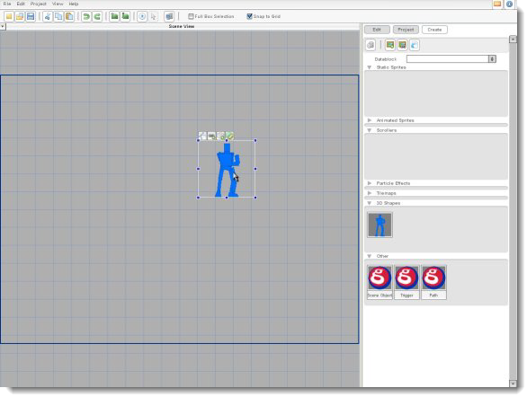
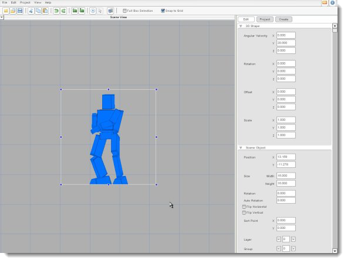

Torque 2D - 3D Shapes Tutorial
In this tutorial, you'll learn how to use 3D shapes in Torque 2D. The 3D file format that T2D uses is the '.dts' format. This is the same format that is used by the Torque Game Engine and other Garage Games products. There are many tutorials and reference documents available on the Garage Games website about creating these files using various 3D graphics suites. We won't go into that here. This tutorial assumes that you already have 3D shapes created and converted to the .dts format.
To
prepare for this tutorial, run Torque 2D and create a new
project by choosing New Project...
from the file menu. Name the new project "Shapes" and use
the Empty Game project
template. This creates a new folder called Shapes
in your TorqueGameBuilder/Games
folder.
We'll need to add a 3D shape to the Shapes project for this tutorial. When you're building your own game you'll create your own, but for now we're just going to copy a couple files from the TutorialBase project supplied with T2D. 3D shapes are stored in the data/shapes folder, so open your file browser and browse to the TTorque Game Builder 1.7.5 Pro/Games/TutorialBase/game//data/shapes folder. Copy the files called player.dts and player_blue.jpg. Paste them into the Torque Game Builder 1.7.5 Pro/Games/Shapes/game/data/shapes folder. These two files are the shape file and the image used to paint the shape. In most cases, you will have at least one image (or 'texture') that goes along with your 3D shapes.
The final step in this process is to reload your project file. There are two ways to do this... you can either close and re-open T2D, or you can select Open Project... from the File menu, open a different project, then re-open the Shapes project.
You can now find your player.dts shape in the object picker. In the Create tab, scroll down to 3D Shapes... there it is! You can now drag it onto the screen just like any other image (as shown in Figure 1). You can also use the object handles to size it, but not to rotate it.

Now that we have our 3D shape on the screen, let's check out the properties we can edit on it. Go to the Edit tab and check out the 3D Shape section at the top. There are 4 properties, each with an X, a Y, and a Z value: Angular Velocity, Rotation, Offset, and Scale. The X, Y, and Z options are the axes of the shape... you can picture X as a line going from left to right through the center of the shape, Y as a line going from top to bottom through the center, and Z as a line coming up, out of the screen, through the center of the object. While we're checking out these properties, you may want to zoom in on the object (with the '+' key).
The Angular Velocity property applies a constant rotation to the object. Set the Angular Velocity Y property to "20", and you'll see that our object was actually facing backwards (as shown in Figure 2)! Set it back to "0" when you're done watching it rotate. Take a minute to experiment with each of the following properties:

Angular Velocity sets a constant rotation around the chosen axis.
Rotation sets a rotation value around the axes, but not a moving rotation. Note that because of the complications of 3D math, combining rotations around different axes can cause some unpredictable effects.
Offset moves the 3D shape along the axes. Note that you can't move the object toward or away from the camera, because T2D is a two-dimensional world!
Scale sizes the object in 3D space. Note that you can't scale the object toward or away from the camera, again because T2D is a two-dimensional world.
The 3D shape's special 3D functions can be accessed through the object's class, just like with any other T2D Scene Object. There are many tutorials that go through using class functions in depth. For this tutorial, it is assumed that you understand the basics of this, and we'll just jump into this one simple example...
First, go to the Scripting section in the Edit tab for the 3D shape. Enter "player" as the Class. Next, add the following code to the very bottom of the game.cs file in your game/gameScripts folder:
sceneWindow2D.setUseObjectMouseEvents(true);
function player::onAdd(%this)
{
%this.setUseMouseEvents(true);
}
function player::onMouseDown(%this, %modifier, %worldPosition, %mouseClicks)
{
%this.setShapeAngularVelocity(0,20,0);
}
|
To activate this code, you will again need to re-load the project, so either close and re-open T2D or open another project then re-open this one. Now, click the Play Level button in the toolbar. When you click on the object, it starts to rotate.
This tutorial has given you the bare essentials of using 3D Shapes. You can find quite a bit more detail in the 3D Shapes reference document that is included with T2D. You can also find brief documentation on all the possible functions for 3D objects in the T2D Reference under t2dShape3D.